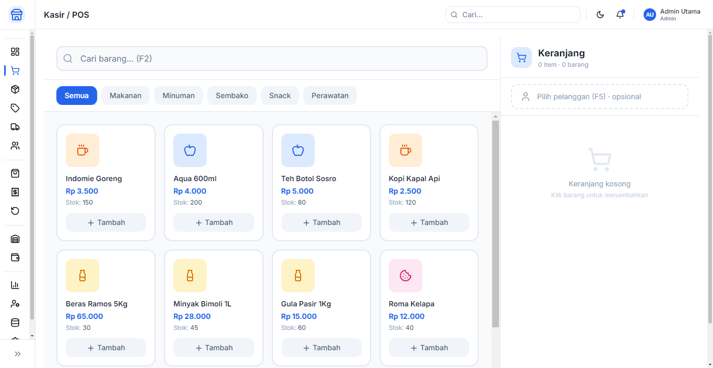

Kasir Cepat & Mudah
Interface kasir yang dirancang untuk kecepatan. Cukup ketik barcode atau cari produk, pilih jumlah, dan transaksi selesai dalam hitungan detik. Cocok untuk jam ramai.
Sistem Point of Sale (POS) gratis dan open source khusus untuk bisnis Indonesia. Mendukung struk pembelian resmi, integrasi printer thermal 80mm, sistem inventaris, laporan penjualan per pajak, multi-toko, multi-kasir, dan mode offline. Cocok untuk warung, toko, restoran, café, minimarket, dan bisnis UMKM di seluruh Indonesia.

Interface kasir yang dirancang untuk kecepatan. Cukup ketik barcode atau cari produk, pilih jumlah, dan transaksi selesai dalam hitungan detik. Cocok untuk jam ramai.
Cetak struk pembelian resmi dengan format standar Indonesia. Termasuk NPWP toko, alamat, tanggal transaksi, PPN 11%, dan detail items sesuai ketentuan DJP.
Support langsung printer thermal umum di Indonesia: Xprinter, Epson TM-T20, Goojodoor, Citizen. Auto-cetak struk, cut kertas, dan buka drawer kas.
Scan barcode produk, generate barcode untuk produk tanpa barcode. Dukung pembayaran QRIS (QR Code Indonesian Standard), GoPay, OVO, Dana, ShopeePay.
Kelola stok otomatis setiap transaksi. Alert stok minimum, laporan persediaan, FIFO, multi-gudang, opname stok, dan integrasi supplier.
Laporan penjualan harian, mingguan, bulanan. Laporan PPN masukan/keluar, perhitungan pajak otomatis, ekspor CSV/Excel untuk akuntansi.
Kelola beberapa toko dari satu sistem. Setiap kasir punya akun terpisah. Sinkron data antar toko. Laporan gabungan untuk pemilik bisnis.
Berjualan tanpa internet. Semua transaksi tersimpan lokal. Saat online, data otomatis tersync ke cloud. Tidak ada data yang hilang.
Tunai, kartu debit/kredit, QRIS, e-wallet (GoPay, OVO, Dana, ShopeePay), transfer bank, kredit toko, piutang, dan split payment.
Diskon per item, per transaksi, beli X gratis Y, happy hour, paket bundling, voucher, loyalty points, dan harga khusus member.
Database supplier, pemesanan barang, purchase order, penerimaan barang, catatan harga beli, dan riwayat transaksi dengan supplier.
Interface responsif untuk tablet dan HP. Kasir bisa berjualan dari tablet Android/iPad. Cocok untuk food truck, stand bazaar, atau toko kecil.
Ribuan item, ratusan transaksi per hari. Klat Kasir dirancang untuk kecepatan kasir warung dengan harga terjangkau. Stok otomatis berkurang.
Menu dengan variasi (ukuran, topping), split bill, pemesanan meja, dapur printer, delivery order, dan integrasi GrabFood/GoFood.
Ribuan SKU, barcode scanning, promosi bundling, member card, loyalty points, dan laporan penjualan per departemen/kategori.
Track expiry date, batch number, nomor registrasi obat, resep dokter, dan laporan penjualan obat untuk BPJS.
Variasi ukuran, warna, model. Barcode per variasi, ukuran stok terpisah, display katalog di tablet kasir, dan retur barang.
Penjualan per kg/ons/pcs. Timbangan digital terintegrasi, harga dinamis sesuai berat, dan manajemen barang basi/rusak.
v3.2.0 • 78 MB
v3.2.0 • 72 MB
Ya! Klat Kasir 100% gratis dan open source (GPL-3.0). Tidak ada biaya langganan, tidak ada biaya transaksi, tidak ada fitur terkunci. Semua fitur tersedia sejak awal.
Ya! Klat Kasir mencetak struk sesuai standar Indonesia dengan NPWP toko, alamat lengkap, tanggal transaksi, detail item, PPN 11%, dan total yang sesuai ketentuan DJP. Mendukung printer thermal 80mm dan 58mm.
Xprinter XP-N160II, XP-T80II, Epson TM-T20III, TM-T82, Goojodoor GP-1320D, GP-58MM, Citizen CT-S310II, dan mayoritas printer thermal ESC/POS compatible lainnya.
Ya! Klat Kasir bekerja 100% offline. Semua transaksi, stok, dan laporan tersimpan lokal di komputer Anda. Saat internet tersedia, data bisa disinkronkan ke cloud secara otomatis.
Ya! Klat Kasir mendukung QRIS (QR Code Indonesian Standard) untuk pembayaran digital. Juga mendukung GoPay, OVO, Dana, ShopeePay, LinkAja, dan transfer bank.
Ya! Klat Kasir punya mode restoran dengan fitur: menu dengan variasi (ukuran, topping), split bill, pemesanan meja, printer dapur, delivery order, dan integrasi GrabFood/GoFood.
Klat Kasir otomatis menghitung PPN 11% (siap untuk 12%). Laporan PPN masukan/keluar tersedia, bisa diekspor untuk pengisian SPT Masa PPN. Integrasi e-Faktur DJP juga tersedia.
Ya! Data tersimpan lokal dengan enkripsi. Backup otomatis harian bisa disimpan ke USB/cloud. Tidak ada data yang dikirim ke server KlatAsia tanpa persetujuan Anda. Anda kendali penuh atas data.
Ya! Klat Kasir mendukung multi-toko dengan satu akun. Data tersinkron via internet. Laporan gabungan tersedia untuk pemilik bisnis yang mengelola beberapa cabang.
Download, install, jalankan. Wizard setup akan membantu Anda: input data toko, tambah kategori produk, import produk dari CSV (jika ada), setup printer, dan mulai berjualan. Bisa berjualan dalam 10 menit!